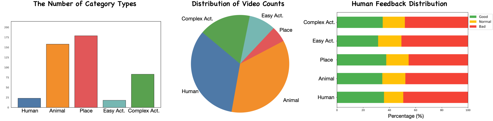
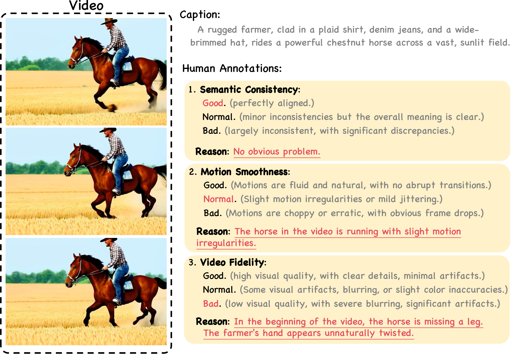
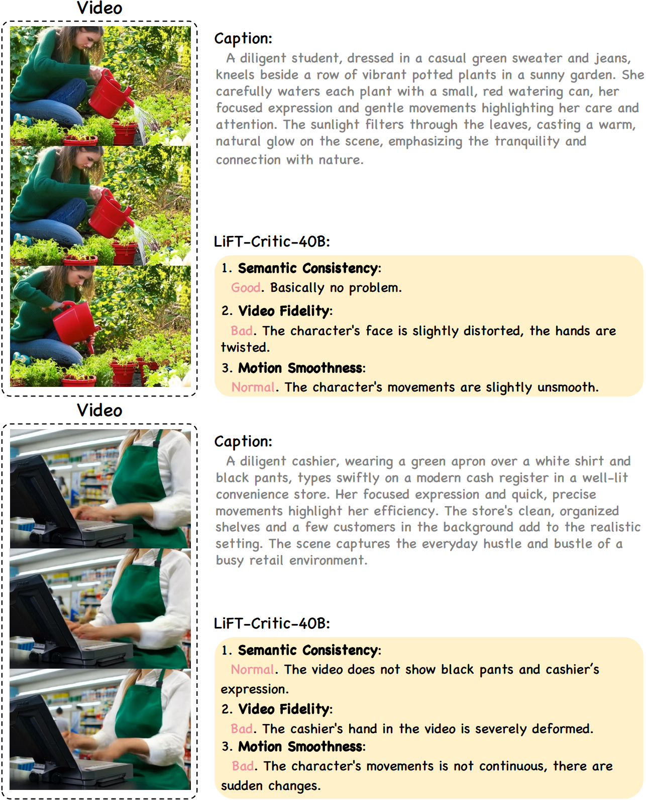
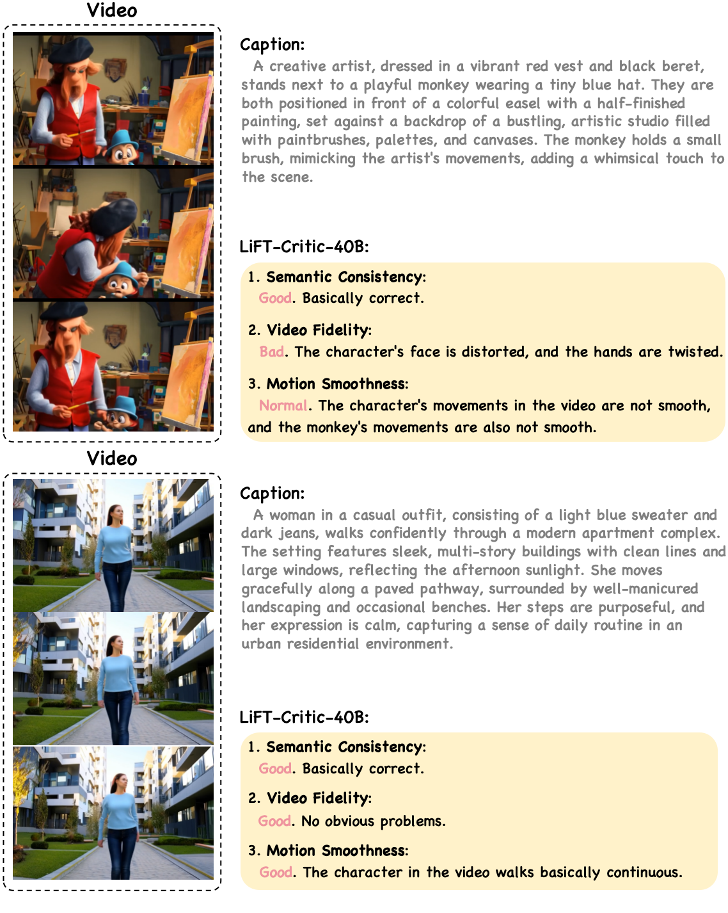
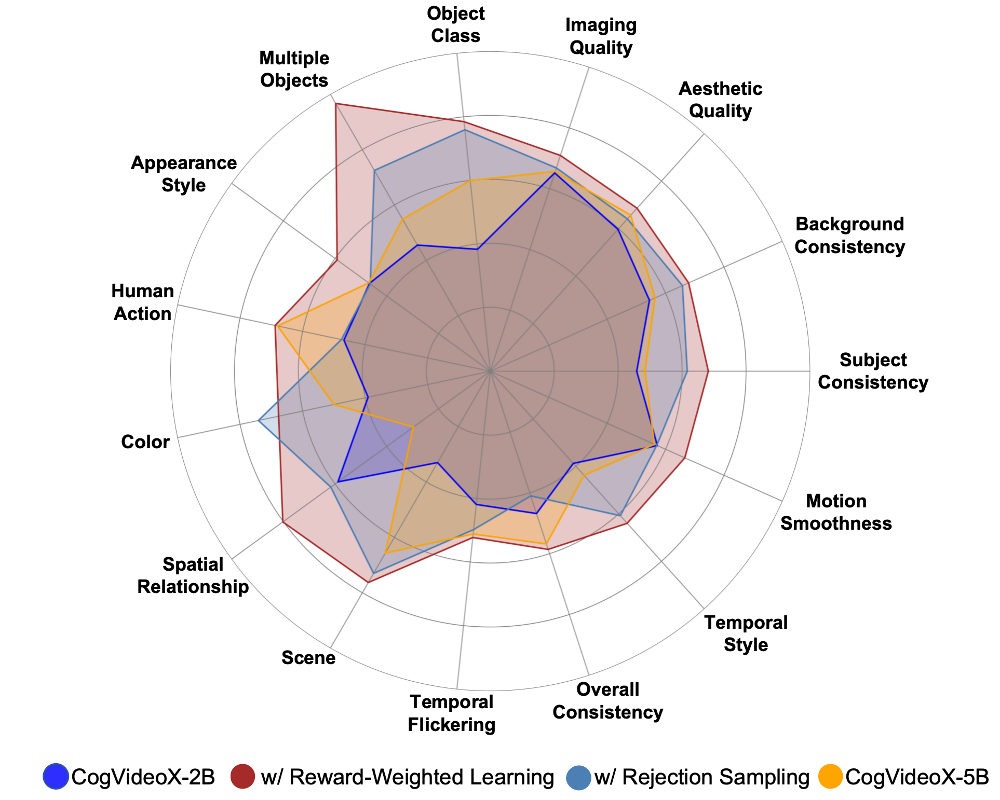

This work proposes LiFT, a novel fine-tuning method leveraging human feedback for T2V model alignment through three key stages: (1) human feedback collection, (2) reward function learning, and (3) T2V model alignment.
Abstract
Recent advancements in text-to-video (T2V) generative models have shown impressive capabilities. However, these models are still inadequate in aligning synthesized videos with human preferences (e.g., accurately reflecting text descriptions), which is particularly difficult to address, as human preferences are inherently subjective and challenging to formalize as objective functions. Therefore, this paper proposes LiFT, a novel fine-tuning method leveraging human feedback for T2V model alignment. Specifically, we first construct a Human Rating Annotation dataset, LiFT-HRA, which includes approximately 10k human annotations comprising both a score and the corresponding rationale.
Based on this, we train a reward model LiFT-Critic to learn human feedback-based reward function effectively, which serves as a proxy for human judgment, measuring the alignment between given videos and human expectations.
Lastly, we leverage the learned reward function to align the T2V model by maximizing the reward-weighted likelihood.
As a case study, we apply our pipeline to CogVideoX-2B, showing that the fine-tuned model outperforms the CogVideoX-5B across all 16 metrics, highlighting the potential of human feedback in improving the alignment and quality of synthesized videos.
Method Overview
Method Overview. This illustration depicts three key steps of our fine-tuning pipeline:
(1) Human Feedback Collection. We start by selecting phrases derived from randomly chosen category words and expanding them into detailed prompts using an LLM. These prompts are then used by a T2V model to generate video-text pairs, which humans subsequently annotate to construct LiFT-HRA.
(2) Reward Function Learning. Based on this dataset, we train a Visual-Language model, LiFT-Critic, to predict scores across three dimensions, effectively learning a reward function that reflects human preferences.
(3) T2V Model Alignment. Finally, LiFT-Critic assesses the videos generated by the T2V model, assigning scores across the defined dimensions. These scores are then mapped into a reward weight, which guides the fine-tuning of the T2V model through reward-weighted learning, enabling it to better align with human preferences.
Dataset: LiFT-HRA (Human Rating Annotation)

The visualized statistic results of our proposed LIFT-HRA. It illustrates the distribution of category types, the video count across these categories, and the corresponding human feedback distribution for each category.

An illustration of our annotation UI. Annotators evaluate each video by assigning scores to each dimension and providing the rationale behind their assessments.
Video Reward Model: LiFT-Critic


Qualitative results of LiFT-Critic. We present several case studies illustrating how our LiFT-Critic evaluates synthesized
videos.
Quantitative Comparison

Visualized evaluation results in multiple evaluation dimensions. The middle two methods in the label region represent the CogVideoX-2B model fine-tuned using different reward learning strategies.
Qualitative Comparison
CogVideX-2B
CogVideX-2B-LiFT (Ours)
A student sits in a quiet library, surrounded by towering shelves of books. The camera captures their focused expression as they take notes, then pans to reveal sunlight streaming through a large arched window.
A farmer harvests ripe apples in an orchard during golden hour. The camera captures the lush trees laden with
fruit, the farmer's gentle movements, and the sunlight filtering through the branches.
In a classroom, the teacher stands in front of a large chalkboard, explaining a complex concept with vivid gestures while students take notes at their desks.
A professor works in his cozy office as snow falls outside the window. Clad in a yellow sweater, he sits at a desk cluttered with books and manuscripts. The camera moves in for a close-up, slowly advancing towards him.
A musician sits on a wooden porch, strumming his acoustic guitar under a starlit sky. The moon casts a soft, silvery glow, illuminating his focused expression and the gentle movements of his hands. The serene night is filled with the melodic sounds of his music, blending harmoniously with the rustling leaves and distant cricket chirps. His attire, a simple white shirt and dark jeans, adds to the tranquil scene, capturing a moment of pure, heartfelt serenade.
A person sits at a wooden desk in a quiet room, writing in a leather-bound journal. A desk lamp casts a warm glow, illuminating the open pages. The camera focuses on the person\'s hand as they write, showing a steaming cup of tea and a stack of books nearby.
A woman with long, flowing hair stands on a sandy beach, pulling a colorful kite string. The kite, vibrant and large, soars high above her against a clear blue sky. Her casual attire, consisting of a white tank top and denim shorts, complements the relaxed, sunny atmosphere. She looks upwards, her face lit with a sense of joy and freedom, as the kite dances in the breeze, creating a dynamic and lively scene.